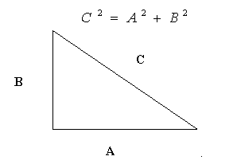
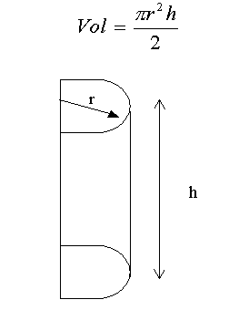

Actividad: Ejercicios sobre variables, constantes, tipos de datos y operadores
info_outline Ejercicios sobre variables, constantes, tipos de datos y operadores
Desarrollarás, en conjunto con el profesor, los algoritmos de algunos problemas. También verás la forma en cómo estos algoritmos puede convertirse en un programa en Python.
group Modalidad
Sesión Plenaria.
check Objetivos de aprendizaje
- Escribir programas simples en Python que impliquen el uso de operadores básicos.
list Instrucciones
- Resuelve cualquier duda que te haya quedado del autoestudio previo.
- Desarrolla e implementa, en conjunto con el profesor, los siguiente algoritmos.
-
Problemas:
Un algoritmo que suma dos valores numéricos. - Un algoritmo que calcule el área de un círculo.
- Un algoritmo que transforme grados Farenheit a Celsius. Recuerda que Celsius = 5 / 9 ( Farenheit – 32).
- Un algoritmo que calcule la superficie de un triángulo en función de la base y la altura.
-
Desarrolla el algoritmo y posteriormente el programa completo en Python que solicite al usuario el valor asignado a los catetos de un triángulo rectángulo, y que calcule el valor resultante de la hipotenusa. Para la solución de este problema se sugiere que utilices el teorema de Pitágoras.

-
Desarrolla el algoritmo y posteriormente un programa completo en Python que determine el volumen de la siguiente figura geométrica (imagine que es un medio cilindro). El radio (r) y la altura (h) son solicitadas al usuario.

El valor de PI debe de ser declarada como una constante cuyo valor es igual a 3.141592.
-
Caso PISA:
Un algoritmo examen en línea (Pregunta al usuario y muestra la respuesta correcta). - Un programa para entrenar que pide dos datos al usuario, le da un tiempo de espera y arroja la respuesta correcta.
attachmentRecursos
- Template para que comentes actividad2-2.py
offline_pin Especificaciones de entrega
No Aplica.